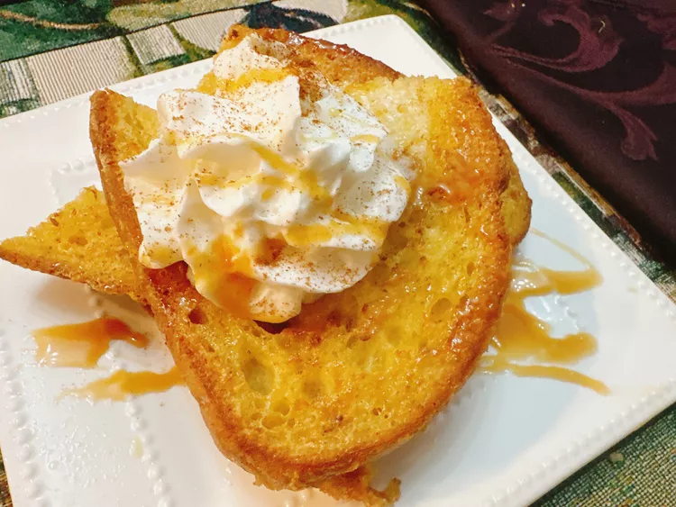

Coffee Creamer French Toast

The traditional French toast dish is made with coffee creamer, but the addition of just the right amount of sweetness by substituting coffee creamer with cinnamon French toast flavor instead of milk.
If you want to kick it up a notch, top with whipped cream, a drizzle of caramel sauce, and a pinch of cinnamon.
Ingredients
- 1/2 cup cinnamon French toast flavor coffee creamer (such as Chobani® Cinnamon French toast)
- 1 1/2 teaspoons brown sugar
- 1/4 teaspoon cinnamon
- 1 splash Mexican vanilla extract
- 1 pinch salt
- 4 slices Italian bread (such as Turano® Pane Turano)
- 1 tablespoon butter
- whipped cream (optional)
- pinch ground cinnamon (optional)
- prepared caramel sauce, to taste (optional)
Directions
-